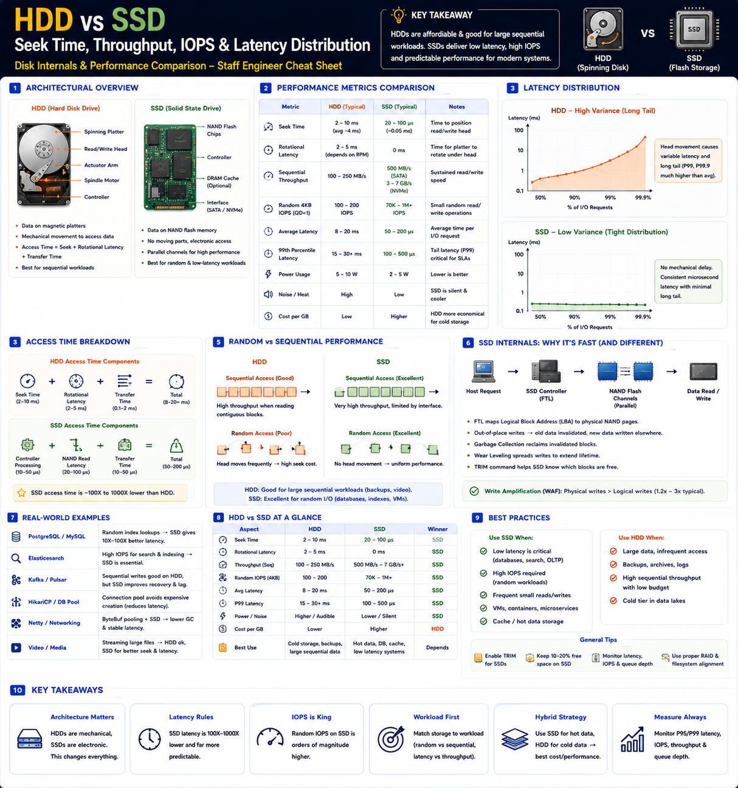

Seek time, throughput, IOPS & latency distribution — Staff Engineer level
The Big Picture
Every application eventually reads or writes data. The storage device determines latency, throughput, IOPS, scalability, tail latency (P99), and user experience.
Architecture
HDD — Mechanical
SSD — Electronic
HDD vs SSD — Full Comparison
| Feature | HDD | SSD |
|---|---|---|
| Storage Medium | Magnetic Platters | NAND Flash |
| Moving Parts | Yes | No |
| Seek Time | 2–10 ms | 20–100 µs |
| Rotational Delay | Yes (~4 ms @ 7200 RPM) | None |
| Random I/O | Poor | Excellent |
| Sequential I/O | Good | Excellent |
| Power Usage | Higher | Lower |
| Cost/GB | Low | Higher |
| Noise | Audible | Silent |
Seek Time
Time to move the read/write head to the correct track.
| Device | Seek Time |
|---|---|
| HDD | 2–10 ms |
| SATA SSD | ~0.1 ms |
| NVMe SSD | 20–50 µs |
Seek time dominates HDD random I/O. SSDs effectively eliminate this cost.
Rotational Latency (HDD Only)
After seeking, HDD waits for the platter to rotate to the correct sector.
| RPM | Average Delay |
|---|---|
| 7200 RPM | ~4.2 ms |
| 10K RPM | ~3 ms |
| 15K RPM | ~2 ms |
SSD has zero rotational latency — no platters, no waiting.
Throughput — Data Transfer Rate
| Device | Sequential Throughput |
|---|---|
| HDD | 150–250 MB/s |
| SATA SSD | 500–600 MB/s |
| NVMe Gen3 | 3 GB/s |
| NVMe Gen4 | 7 GB/s |
| NVMe Gen5 | 10–14 GB/s |
Sequential workloads: video streaming, backup, log replication benefit most from throughput.
IOPS — I/O Operations Per Second
Random 4 KB reads — how many operations per second:
| Device | Typical IOPS |
|---|---|
| HDD | 100–200 |
| SATA SSD | 70K–100K |
| NVMe SSD | 500K–1M+ |
Random workloads: OLTP databases, search indexes, key-value stores — IOPS is the bottleneck.
Read Latency
| Device | Read Latency |
|---|---|
| HDD | 8–20 ms |
| SATA SSD | 100–200 µs |
| NVMe SSD | 20–80 µs |
Latency Distribution — P99 Matters
Average latency is not enough. Production systems care about P95, P99, P99.9.
HDD — Wide Tail
SSD — Tight Distribution
SSD's predictable tail latency makes it ideal for SLA-sensitive services.
Random vs Sequential Access
HDD Sequential
Very efficient — head stays on track
HDD Random
Head movement causes delays
SSD — Both Fast
No physical movement — all access is equal
SSD Internals
Write Amplification
Flash cannot overwrite directly. New page → mark old invalid → erase block later. More physical writes than logical writes.
Wear Leveling
Controller distributes writes across all blocks evenly. Each NAND cell has limited write cycles — spreading writes extends SSD lifespan.
NVMe Queue Depth & Parallelism
NVMe supports up to 64K queues × 64K entries. HDDs cannot parallelize physical head movement.
Real-World Examples
| System | Workload | HDD | SSD |
|---|---|---|---|
| PostgreSQL | Random index lookups | High seek latency | Near-instant reads, better TPS |
| Elasticsearch | Thousands of random reads | Query latency ↑↑ | Excellent IOPS, low latency |
| Kafka | Sequential log writes | Acceptable for logs | Faster recovery, compaction |
| Object Storage | Cold objects + metadata | Cold objects (cheap) | Metadata (hot path) |
Staff Engineer Thinking
Junior
Which disk is faster?
Senior
Do we need SSD?
Staff asks
Production Failure Scenarios
Slow Database Queries
Cause: Random I/O on HDD · Fix: Move indexes and hot tables to SSD
High API Latency
Cause: Disk seek delays · Fix: Use SSD or improve page cache hit ratio
Slow Backup
Cause: Limited sequential throughput · Fix: Parallelize I/O or use faster storage
SSD Performance Drop
Cause: GC and write amplification · Fix: Enable TRIM, leave free space for over-provisioning
Staff Engineer Decision Framework
| Scenario | Recommended Storage |
|---|---|
| OLTP Database | NVMe SSD |
| Search Engine (Elasticsearch) | NVMe SSD |
| Kafka Log Storage | SSD preferred; HDD acceptable for sequential logs |
| Video Streaming | HDD or SSD depending on throughput needs |
| Cold Archive | HDD |
| Metadata Store | SSD |
| Backup Storage | HDD |
| High-Frequency Trading | NVMe SSD |
Production Debugging Checklist
Storage Request Lifecycle
Key Takeaways
